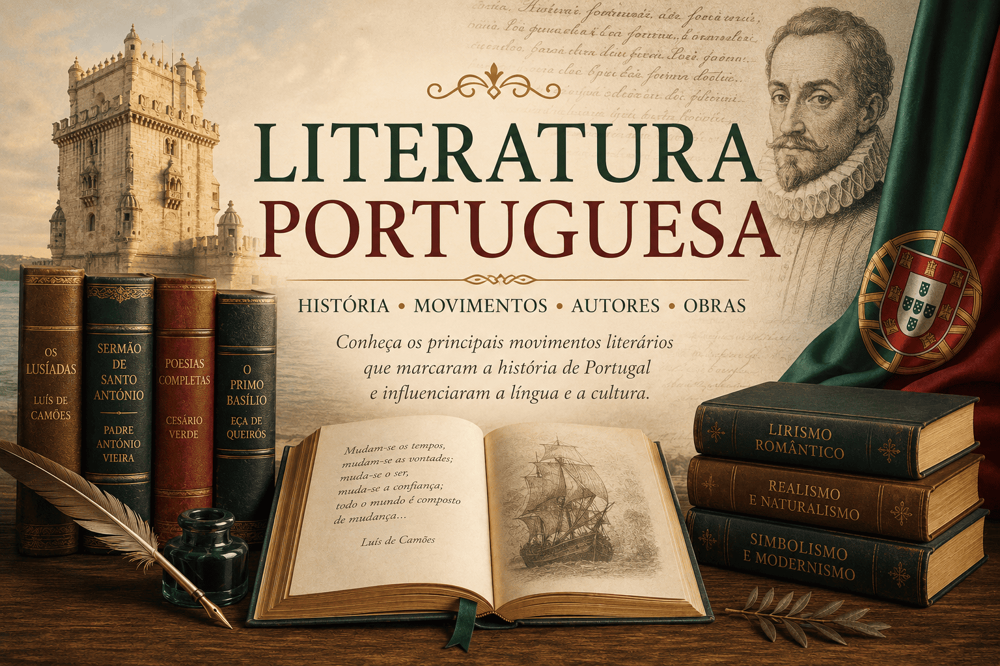

Literatura Portuguesa: história, movimentos literários e autores
A Literatura Portuguesa constitui uma das tradições literárias
mais importantes da língua portuguesa, reunindo movimentos culturais,
escolas literárias, autores e obras que influenciaram profundamente
a formação da literatura brasileira e da cultura ocidental.
Desde as cantigas medievais até os movimentos modernos,
a produção literária portuguesa acompanhou transformações históricas,
sociais, políticas e filosóficas ocorridas em Portugal ao longo dos séculos.
Nesta seção do Mestre Kira, você encontrará conteúdos didáticos
sobre os principais períodos da Literatura Portuguesa, incluindo Humanismo,
Classicismo, Barroco, Arcadismo, Romantismo, Realismo, Naturalismo,
Simbolismo e Pré-Modernismo.

O que você encontrará nesta seção
Origem da Literatura Portuguesa;
Cantigas medievais e tradição trovadoresca;
Humanismo e Classicismo;
Barroco e Arcadismo;
Romantismo e Realismo em Portugal;
Naturalismo e Simbolismo;
Pré-Modernismo português;
Autores e obras importantes;
Movimentos culturais e literários portugueses.
Os conteúdos possuem abordagem didática e contextualizada,
sendo indicados para estudantes da educação básica,
vestibulandos, graduandos em Letras, professores
e leitores interessados em literatura e cultura portuguesa.
Os conteúdos desta seção são produzidos por
Leildo Gonçalves,
professor de Língua Portuguesa, pesquisador e criador do
Mestre Kira,
projeto educacional voltado ao ensino de literatura,
linguagem, redação e tecnologia aplicada à educação.